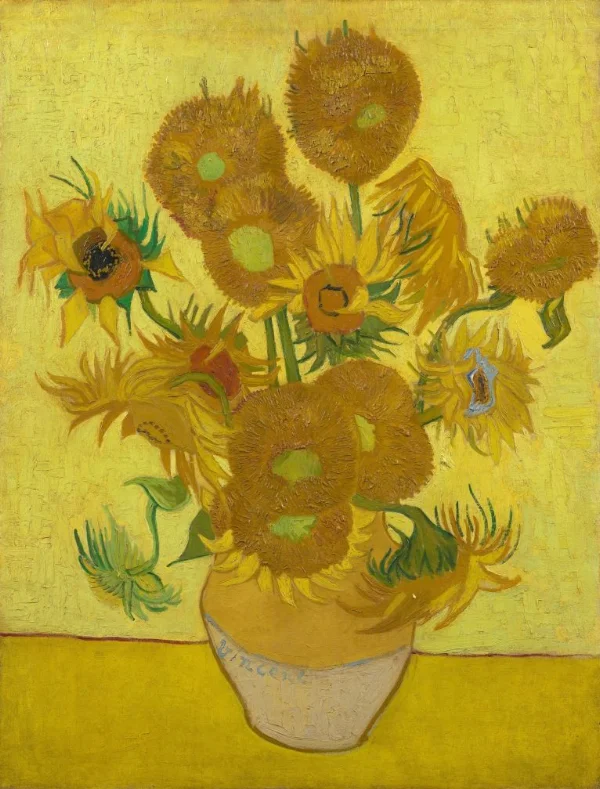
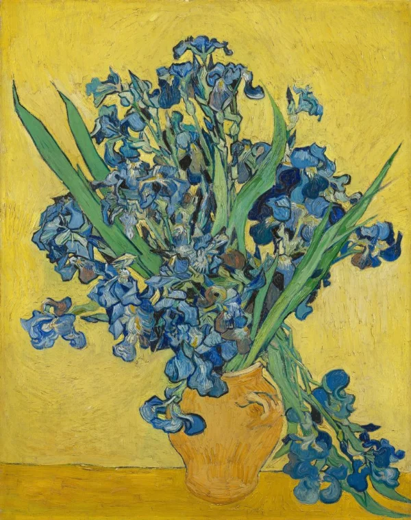
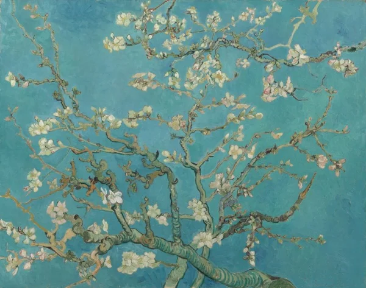

Home
Galeri
Produk
Kontak
Produk dari Van Gogh

Sunflowers (1889)
Deskripsi Produk:
Sunflowers merupakan salah satu karya paling terkenal dari Vincent van Gogh yang menampilkan rangkaian bunga matahari dalam sebuah vas. Lukisan ini didominasi warna kuning, emas, dan oranye yang memberikan kesan hangat, cerah, dan penuh energi. Goresan kuasnya yang tebal dan ekspresif menciptakan tekstur serta karakter yang khas. Melalui karya ini, Van Gogh menunjukkan bahwa bunga sederhana dapat menjadi objek seni yang luar biasa. Lukisan ini cocok dijadikan inspirasi dekorasi ruang tamu, kamar tidur, maupun ruang kerja karena mampu menghadirkan suasana ceria dan artistik
Ukuran: 92,1 × 73 cm
Media: Cat minyak di atas kanvas

The Bedroom (1888)
Deskripsi Produk:
The Bedroom menggambarkan kamar tidur Van Gogh di rumahnya di Arles, Prancis. Lukisan ini menampilkan tempat tidur kayu, kursi, meja kecil, dan beberapa lukisan yang menghiasi dinding. Perpaduan warna biru, kuning, dan cokelat menciptakan suasana sederhana dengan karakter visual yang kuat. Perspektif ruangan yang unik serta goresan kuas khas Van Gogh membuat lukisan ini menarik untuk diamati. Karya ini mencerminkan keinginan sang seniman untuk menemukan ketenangan dalam kehidupan sehari-hari. Cocok bagi pecinta seni yang menyukai lukisan interior dan dekorasi bergaya klasik.
Ukuran: 72,4 × 91,3 cm
Media: Cat minyak di atas kanvas

Irises (1890)
Deskripsi Produk:
Irises merupakan lukisan yang menampilkan bunga iris dengan warna biru keunguan yang mencolok di antara dedaunan hijau. Karya ini dibuat ketika Van Gogh menjalani perawatan di Saint-Rémy, Prancis. Susunan bunga yang beragam, garis-garis tegas, dan goresan kuas yang dinamis menciptakan kesan alami sekaligus ekspresif. Perpaduan warna yang harmonis memperlihatkan kemampuan Van Gogh dalam menangkap keindahan alam melalui sudut pandang artistiknya. Lukisan ini cocok untuk memperindah ruangan dan memberikan sentuhan elegan bagi penggemar seni bertema tumbuhan serta warna-warna alami.
Ukuran: 71 × 93 cm
Media: Cat minyak di atas kanvas

Almond Blossom (1890)
Deskripsi Produk:
Almond Blossom menggambarkan ranting pohon almond yang dipenuhi bunga putih dengan latar langit biru yang cerah. Van Gogh menciptakan karya ini sebagai hadiah untuk menyambut kelahiran keponakannya, sehingga lukisan ini sering dikaitkan dengan harapan, kehidupan baru, dan kebahagiaan. Komposisi ranting yang menyebar serta warna-warna lembut memberikan kesan segar dan menenangkan. Berbeda dari beberapa karyanya yang menggunakan warna kontras dan goresan dramatis, lukisan ini menonjolkan kesederhanaan serta keindahan alam. Cocok sebagai inspirasi dekorasi ruangan dengan suasana damai, minimalis, dan artistik.
Ukuran: 73,5 × 92 cm
Media: Cat minyak di atas kanvas